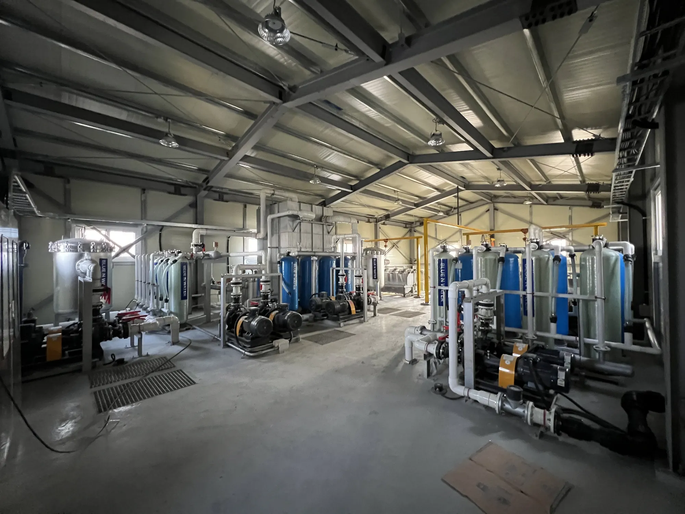
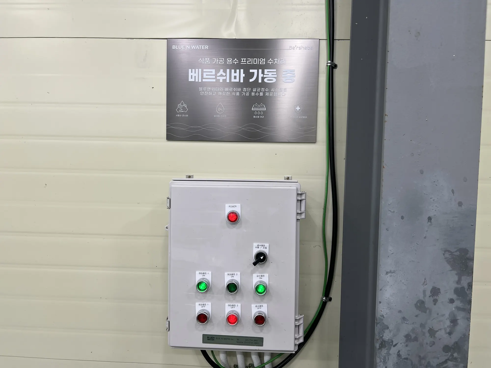
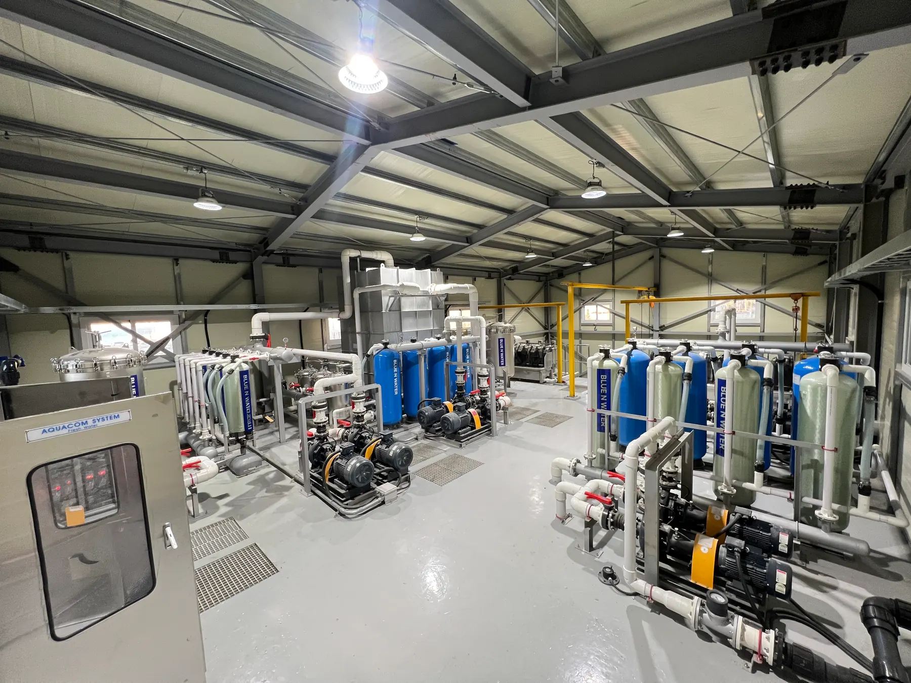
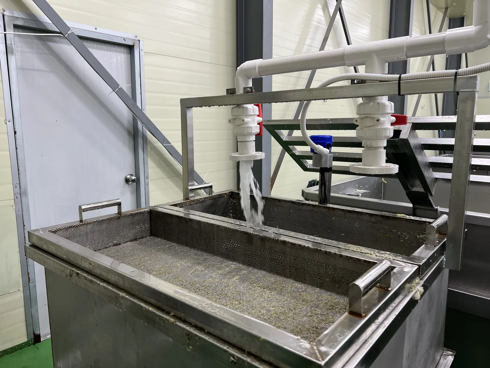

AQUACOM
Advanced Quality Catalytic Oxidation & Media Treatment
AQUACOM integrates catalytic advanced oxidation process (C-AOP) with media treatment. It is BLUE N WATER’s flagship process for reaching target water quality under demanding field conditions.
RaDX
Catalyst-based reaction platform
AQUACOM
Catalytic oxidation and media treatment
BLUE BOX
Mobile water infrastructure platform
Field Reference
AQUACOM Field Application Images
Field reference images show how BLUE N WATER technologies are applied to food-processing water reuse, pool water management and site-specific water treatment operations.

AQUACOM / RaDX Applied Site
Field reference images show how BLUE N WATER technologies are applied to food-processing water reuse, pool water management and site-specific water treatment operations.


